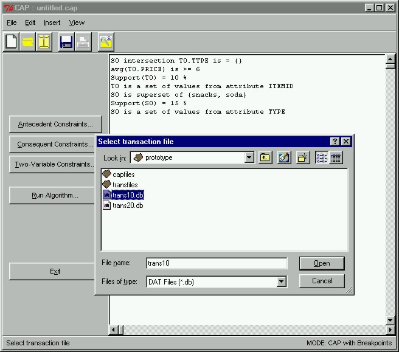

 |
Running CAPWe can view all our constraints at any time in the right hand side panel of the main window. After we are satisfied with our constraints, we can proceed by running CAP to find the constrained frequent sets. To do this, we click the "Run Algorithm" button in the main window. This will immediately pop open a dialog box asking us which transaction database to perform the mining on. Here we select the transaction database trans10.db, which is a database of 10,000 transactions. We subsequently click the "Open" button to open and read from trans10.db and to perform the mining.
|